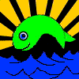

U.S. DIVE
TRAVEL
NETWORK
TM
Our TOP 10 BEST
SNORKELING
VACATION
IDEAS |
|
© Copyright U.S. Dive Travel Network.
THESE SNORKELING VACATION ISLANDS ARE NOT
LISTED in any ORDER of PRESUMED EXCELLENCE.
ALL ARE AMAZING, BEAUTIFUL & ALL WILL GIVE YOU
COLORFUL ADVANTAGES for SNORKELING VACATIONS:
1.
Guanaja Island
, Bay Islands, Honduras.
2.
Turneffe Island Atoll
, Belize Barrier Reef.
3.
Bonaire
, Southern Netherlands Antilles.
4.
West Maui / Lahaina ,
Maui - Hawaiian Islands.
5.
Royal Kona Resort
, Kailua-Kona, Hawaii.
6.
Matangi Island
, Fiji Islands, South Pacific.
7.
Kadavu, Astrolabe Reef, Fiji, South Pacific.
8.
Lembeh Strait
, North Sulawesi, Indonesia.
9.
Yap Island
, Micronesia, Mid-Pacific sector.
10.
Little Cayman
, Cayman Islands, Caribbean.
If you are as passionate about skin diving as we are, then get ready to crack a big happy grin, amigos del mar.
Though many of our loyal tropical vacation clients are scuba divers,
we want all our skin-diving friends to know that we're equally delighted to help plan
your snorkeling vacation for you -- any time you need it. Simply put, we're not
here only for the gung-ho compressed-air enthusiasts. There are countless exotic
& affordable snorkeling destinations throughout the Caribbean & Pacific, where
couples & families can enjoy beautiful tropical waters with a simple bag of gear: a
mask, fins & a snorkel. A smartly-planned tropical snorkeling vacation -- a.k.a. skin diving -- is safe, relaxing
& lots of fun at moderate expense, once you set foot on the Caribbean or Pacific island of your choice.
So rest assured, we serve all of our best Caribbean snorkeling or best Pacific skin diving clients with exactly the same enthusiasm, professional energy & TLC attentiveness as our scuba divers.

|
It's common for our scuba diving vacation groups
to bring friends along who have zero interest in chewing scuba regulators, but instead wish to relish
their tropical getaway time by snorkeling. This is easy to accomplish.
We now present the prime list of our snorkeling clients' perennial favorite destinations. These are gems for snorkelers.
These tropical best snorkeling vacation destinations are exquisite, every one of them.
Whatever your dream skin diving vacation may be: Belize snorkeling package, a Honduras snorkeling package, perhaps a Fiji
snorkeling vacation, or a Hawaii snorkeling package, we promise to make it happen.
Other fun snorkeling getaway ideas include: a Belize snorkeling package, perhaps a Guanaja Honduras snorkeling package, or a Hawaii
snorkeling vacation, or a sunny Bonaire snorkeling holiday.
Here are the key criteria we used to highlight these
quality snorkeling vacations: economy of land packages, beauty & cleanliness of marine environment,
safety & "do-ability" of currents, hospitality of local people & easy access to exciting side tours. If you
need more info about these superb skin diving islands, just click on the hot-links below
to see photos & skin diving vacation package details. Please feel free to phone us at any time: 952-953-4124. We love to chat with new clients about dive travel plans, or snorkeling in general, as well as conventional snorkeling vacations, any sort of customized snorkeling vacation, any day-dream skin diving vacation, or kinder & gentler skin diving vacations, serious skin diving, or tropical snorkeling.
So remember if you have the dream to dig deeper into offerings by U.S. Dive Travel -- such as a creatively customized snorkeling vacation, skin diving vacation or best snorkeling destinations, just call your best snorkeling vacation specialists at U.S. Dive Travel. BTW: one warm reminder. In short, we have seen the terms " snorkling vacations " or " snorkling vacation " quite a bit on the Web, folks. But this wonderful seaside sport is NOT spelled " snorkling " -- rather it is spelled as you see above, with an "e" before the "l" -- not after it. So please friends, do not send us e-mails requesting info on " snorkling vacations " nor about a Caribbean or Pacific " snorkling vacation. " Perhaps there is a " snorkle " needed on Neptune but none here on ol' Mother Earth. We feel like Niles Crane harping on such a snarky point, but the sport deserves a boost, don't you think? Therefore, please remember -- it's written " snorkel " & not " snorkling vacation " & we pledge never to needle you again on such a tropical travel nuance. Happy travels & BEST SNORKELING DESTINATIONS from Susan Hessburg, John Hessburg & the reservations team at U.S. Dive Travel ! Let's have some Big Fun on the Big Blue.
|
U.S. Dive Travel Hotline: 952-953-4124.
E-Mail: divetrip@bitstream.net
Mailing Address:
John Hessburg, Susan Hessburg, Mgrs
USDT Network -- Suite #307
7635 West 148th Street
St. Paul, MN, U.S.A. 55124.


©
Copyright U.S. Dive Travel Network.